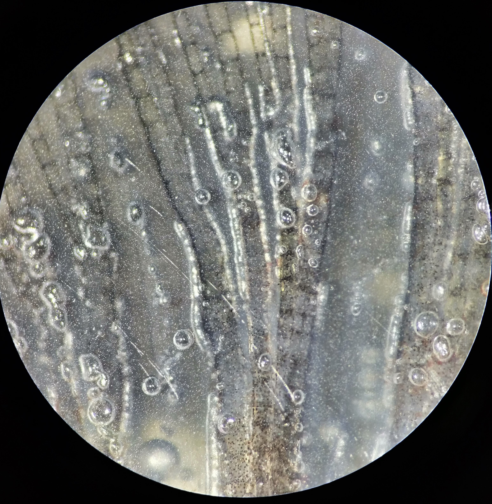

In most cases, the disease is caused by supersaturation of water with nitrogen, less commonly oxygen. This typically happens when water is heated in closed systems where gases cannot freely escape — such as heat exchangers in power plants or boilers in hatcheries.
Air bubbles in the water, on glass, or on plants are dangerous — they can block the gills of fish and cause death.
External signs of gas embolism appear a few hours after fish are placed in supersaturated water. The higher the gas saturation level, the faster the symptoms develop and the sooner the fish may die. At lower saturation levels, fish may survive longer, and signs like the location and shape of bubbles become more variable.
During necropsy of larger fish, foamy blood may emerge from blood vessels. Other signs include: hyperactivity, hypersensitivity to mechanical stimuli, loss of balance, twitching fins, scale erection, ray separation, corneal opacity, lightening or darkening of body coloration, loss of vision, exophthalmia.
Causes may include: excessive oxygen production by plants, overly aggressive artificial aeration, or the use of untreated tap water. The disease develops in conditions of oxygen and nitrogen oversaturation.
Oxygen entering the bloodstream in excess forms tiny bubbles that block blood vessels. When bubbles enter capillaries, they are often larger than the vessel’s diameter, and the heart is not strong enough to push them through — resulting in blockage.
The diagnosis is based on clinical signs, necropsy findings, and water analysis, specifically the level of dissolved oxygen.
Scientific Perspective
Gas Bubble Disease (GBD) is a pathological condition in which free gas bubbles form inside the blood and tissues of fish. These bubbles can lead to ischemia, gill dysfunction, vascular rupture, and even death.
It is common — even in professional literature — to see oversimplified explanations like:
“Fish die because air bubbles in the water block their gills.”
This idea is not just incorrect — it misleads diagnosis and undermines proper prevention strategies.
So What Actually Causes GBD?
The cause is not visible air bubbles, but excess dissolved gases, primarily nitrogen (N₂) and oxygen (O₂), in water that is supersaturated.
Simply put:
Water under certain conditions can hold more gas than it should at normal atmospheric pressure. When fish enter this water, their blood becomes undersaturated by comparison — and gas starts to come out of solution inside their vessels and tissues, forming bubbles.
At higher pressure, bubbles cannot form: gas molecules stay dissolved and mix with water molecules.
Pathogenesis: How the Problem Develops
Gills — impairing respiration and possibly causing edema or hemorrhage.
Skin and fins — with subepidermal bubbles visible to the naked eye.
Internal organs and the heart — where bubbles can cause embolism and sudden death.
Important: Bubbles do not enter the bloodstream from water! They form internally, when the body's own gas balance is disrupted.
Why Visible Bubbles Are Not a Diagnosis
Even if you see small bubbles on tank walls or equipment, it does not necessarily mean gas supersaturation. In fact, bubbles on surfaces are often a sign of degassing — the water is already releasing excess gas.
When the valve is closed, pressure increases in the upstream section, creating conditions that promote greater gas solubility in water.
The real danger is invisible.
Oversaturation is transparent and cannot be seen with the naked eye. Only specialized equipment (e.g., membrane gas analyzers, TGP — Total Gas Pressure meters) can measure the actual risk.
The Soda Bottle Analogy
Imagine a bottle of soda. While it’s sealed, everything is stable: pressure keeps CO₂ dissolved.
Once you open it — the pressure drops, and the gas escapes as bubbles.
With fish, it’s the opposite:
They live in a bottle that’s already been opened — but the gas is still in the water, and now it escapes inside their bodies.
That’s gas bubble disease.
Why This Understanding Matters
You can’t prevent gas bubble disease by just watching for bubbles in the water.
Proper prevention includes:
Monitoring pressure in water systems;
Measuring TGP (if possible);
Allowing water to degas before use;
Using cascade aerators or trickle filters;
Avoiding over-aeration with artificial systems;
Being cautious with water heating (as gas solubility drops with temperature).

Elongated gas bubbles inside the fin vessels of a fish. The stretched shape indicates in vivo formation under pressure within the bloodstream.
And What About Necropsy?
If you find gas bubbles in vessels or under the skin during necropsy — that doesn’t automatically mean GBD.
Such bubbles can form after death, especially in warm water, during decomposition or due to mechanical handling.
That’s why diagnosis requires context:
Water parameters,
Fish behavior,
History of symptoms,
AND pathology findings — must all be considered together.
! Practical Observation
Pumps that generate pressure up to 0.5 bar (about 0.5 atmospheres above ambient) are not capable of creating gas supersaturation high enough to cause severe gas bubble disease.
Even with prolonged exposure to such water, no visible symptoms develop — not even in small, sensitive fish. No subdermal bubbles, no buoyancy issues, no mortality.
Why?
For gas bubbles to form in the bloodstream, the partial pressure of dissolved gases in water must significantly exceed the gas pressure in fish blood. At just 0.5 bar:
gas solubility increases slightly,
but not enough to trigger aggressive embolism or acute symptoms.
Low-power pumps that increase pressure up to 0.5 bar are not dangerous by themselves. The real risk arises only when multiple factors come into play:
air entrainment into the pressurized water flow (e.g. cavitation or leaks), water heating, and most critically — a rapid drop in pressure after high-pressure buildup (such as suddenly opening a valve after pressurizing to 1-1,5 bar).
Final Thought
Gas Bubble Disease is not about air blocking the gills.
It’s a physicochemical imbalance — and a dangerous one.
You can’t diagnose it by sight. But if you understand the mechanism,
you can prevent it — and protect your fish before the bubbles ever appear.
REFERENCES
Legendre D, Zenit R. Gas bubble dynamics. Published online January 6, 2025. doi:10.48550/arXiv.2501.02988
Chen X, Zhang Z, Qin Y, et al. An in-situ study in the Xijiang River basin revealed adverse effects of total dissolved gas supersaturation on fish. Ecotoxicol Environ Saf. 2025;289:117663. doi:10.1016/j.ecoenv.2024.117663
Hong WH, Choi JY, Cho HS, et al. Gas bubble disease in captive Golden Trevally: Pathological insights and needs for life support system and water quality management. J Aquat Anim Health. 2024;36(4):348-354. doi:10.1002/aah.10237
Máchová J, Faina R, Randak T, et al. Fish death caused by gas bubble disease: A case report. Veterinární Medicína. 2017;62:231-237. doi:10.17221/153/2016-VETMED
Pleizier NK, Brauner CJ. Causes and consequences of gas bubble trauma on fish gill function. J Comp Physiol B. 2024;194(5):739-747. doi:10.1007/s00360-024-01538-4
Wang H, Wang Y, Li K, Liang R, Zhao W. Tolerance threshold of a pelagic species in China to total dissolved gas supersaturation: from the perspective of survival characteristics and swimming ability. Conserv Physiol. 2024;12(1):coae023. doi:10.1093/conphys/coae023